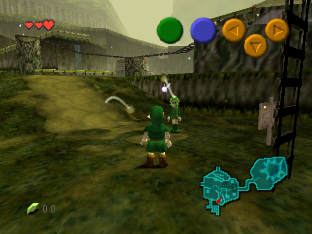
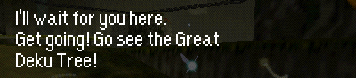
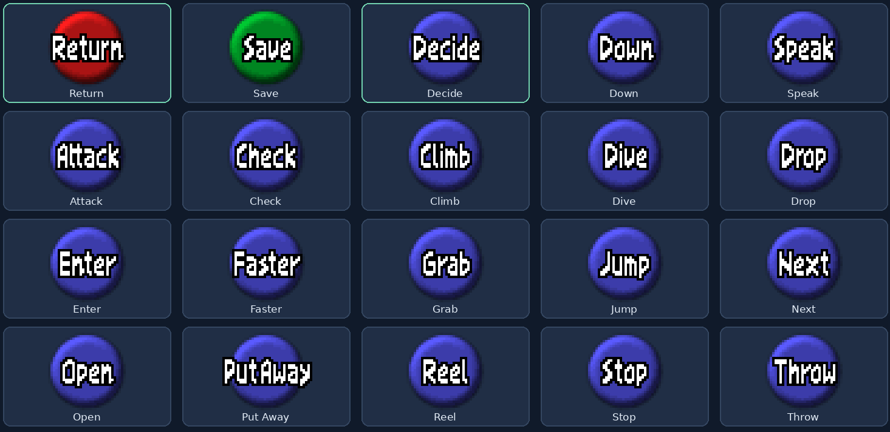
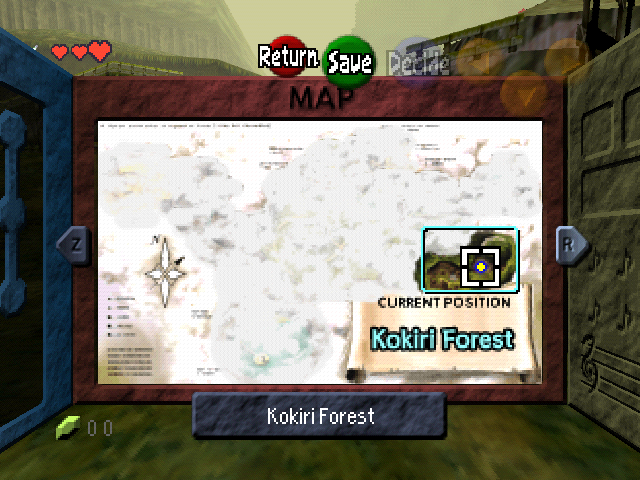
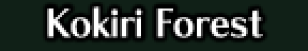
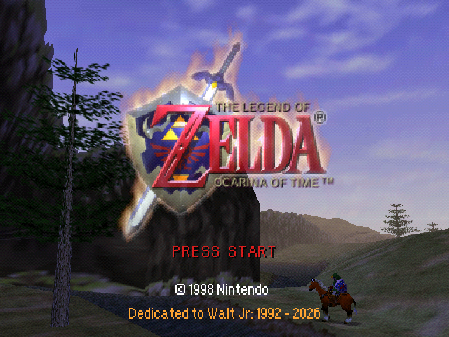
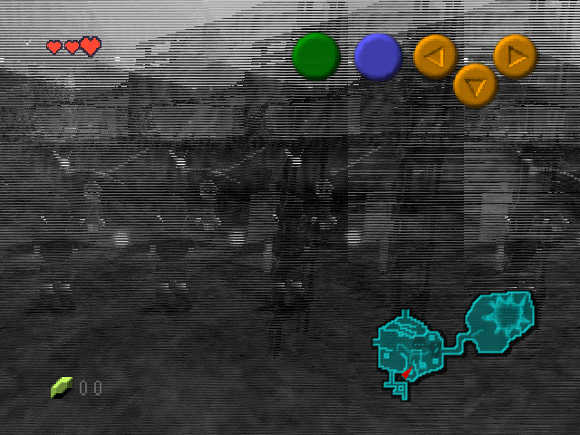
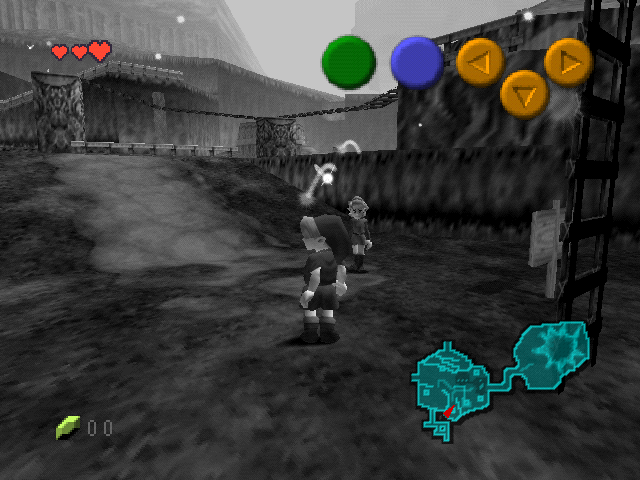
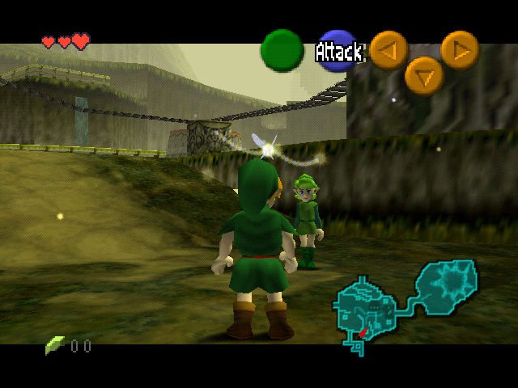
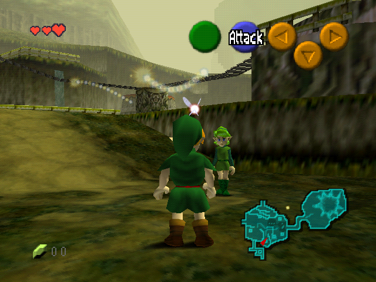

Read at your pace, with less waiting
Normal English text reveals up to 12 glyphs per update. Choices, authored pauses and deliberately slow text keep their intended behavior.
Ocarina of Time at native 640×480, with crisp lettering and carefully chosen curated conveniences.
The goal is simple: make the game easier to see and use, keep its familiar artwork and pacing, and reduce avoidable rendering work.
See what changes
Orange Kid for dialogue and plain UI. Original styling for iconic artwork and action labels.
The native NTSC target stays at 20 FPS. This is a resolution and clarity build.
Targeted at the MiSTer N64 94MHz+ core, with separate automated emulator validation.
This build integrates selected Redux quality-of-life additions. Here is what you will actually notice while playing.
| ↑ Up | Use the Lens of Truth |
|---|---|
| ↓ Down | Use your ocarina |
| ← Left | Toggle Iron Boots |
| → Right | Toggle Hover Boots |
You must own the item. Boots are for adult Link; pressing the same boot shortcut again returns to Kokiri Boots. Normal gameplay restrictions still apply.
Normal English text reveals up to 12 glyphs per update. Choices, authored pauses and deliberately slow text keep their intended behavior.
The push takes fewer frames while retaining the correct grid movement and final position.
This is not the full Redux feature set. Intro skipping, the font work and the warmer rupee sound are additional changes in Orange Kid, described later in this guide.
Ocarina of Time Redux was started by Maroc, with continuation and documentation by ShadowOne333. Orange Kid integrates selected quality-of-life additions from this work.
Maroc’s original Redux project →
ShadowOne333’s Zelda64 Redux documentation →
Actual game renders of Saria's Kokiri Forest dialogue. Start with the enlarged dialogue detail, then switch to the full native frame.

Both images are native 640×480 emulator framebuffer captures. The comparison build restores the original dialogue glyphs, filtering, shadow and spacing within the same high-resolution build. It is not a stock 320×240 screenshot. The same Saria message is opened for capture; no letters are drawn onto either image afterward. The detail is an unedited crop, enlarged without smoothing.
Open original-text native frame · Open Orange Kid native frame · MiSTer viewing profile
The font keeps its own proportions. Letter spacing is checked, lowercase i is one column wide, and the new glyphs use point sampling rather than softened edges.
Inline controller symbols move slightly down to sit alongside the dialogue. Text content and control codes retain their meaning.
Action buttons follow the crisp Return and Decide look. File menus and name entry use Orange Kid.

Save has a separate label-rendering path. Its point-sampling fix removes the remaining softness while keeping the button’s position and shape.
HUD commands use the original white OoT letter shapes with a solid black outline, matching Return and Decide. Orange Kid is used for plain text elsewhere.
Sharper plain text sits alongside the original title logo, area-entry cards and printed map location names.


All 57 English area-entry cards retain the original artwork. Printed map position names and previously changed dungeon headings are restored too.
Bottom map labels, navigation prompts and item names remain Orange Kid.

PRESS START is centered. The copyright uses Orange Kid, followed by orange text beneath it:
Dedicated to Walt Jr:
1992 - 2026
New files skip the dream, Navi’s arrival and Saria’s greeting. Child Link starts outside his house at 10:00 with three hearts and the normal empty inventory.
Existing files are retained. Forest saves resume outside the house; adult and dungeon spawning keep their previous behavior.
Lower volume, softer treble, a little lower-octave body and short reverb. Only the pickup sound is replaced; music, other effects and rupee-counting ticks keep their original audio.
Actual-ROM captures on their original level scale. Faint scene ambience remains.
The larger native image is designed around this core, which was also used for your hardware testing.
A 640×480 frame contains four times as many pixels as the original 320×240 image. The build keeps native graphics and the original 20 FPS NTSC target, while reducing repeated CPU work to help with the larger workload.
The higher core clock does not change the game's frame-rate target.
| Core | MiSTer N64 94MHz+ |
|---|---|
| Memory | 8 MB RDRAM |
| Native image | 640×480 NTSC 480i |
| Shape | 4:3 |
| Game target | 20 FPS |
The following settings come from your supplied MiSTer menu photo. Use this profile when viewing the build on MiSTer.
| Video Out | Original (VI) |
|---|---|
| VI Colorbits | 24 |
| VI Bilinear | Off |
| VI Deblur | On |
| VI Gamma | Off |
| VI Dedither / Antialias | Original |
|---|---|
| VI Divot / Noisedither | Original |
| Texture Filter | Original |
| Dithering / LOD Textures | Original |
| Error Overlay | Off |
Website gameplay images are native emulator framebuffer captures saved as RGB PNGs. No shader, added blur or image enhancement is applied. They show the ROM's rendered pixels; they do not reproduce the MiSTer VI deblur circuit exactly.
The user-confirmed earlier baseline was tested on the MiSTer N64 94MHz+ core. The final rendering fixes also passed automated CPU/RSP/RDP emulator scenarios and targeted code tests. A full hardware playthrough and measured MiSTer FPS comparison have not been established.
The build targets the MiSTer N64 94MHz+ core. It reduces repeated CPU work while keeping the classic 20 FPS NTSC target.
Pause restoration reuses a prepared display list. Grayscale geometry and its palette are reused too, reducing repeated construction and temporary graphics allocations.
Fog settings are restored after pre-rendered backgrounds. Graphics task submission checks all four arenas. Framebuffer selection and depth/glow boundaries were checked for the larger image.


The effect now loads framebuffer rows using a legal 640-pixel source width. The grayscale image is clean; the HUD remains in color because it is drawn afterward.
Both ROM variants passed build, checksum, DMA and BPS checks. Eighteen regression suites passed. An isolated software-RDP test matched 2,457,600 grayscale pixels exactly across four source patterns with single- and multi-worker rendering.
The earlier user-confirmed baseline ran on the MiSTer N64 94MHz+ core. The final fixes also passed automated emulator scenarios. A full hardware playthrough and quantified MiSTer FPS comparison have not been established.
Download the test pipeline guide →Both versions include the same clarity, quality-of-life, audio and rendering changes.

Retains the original visible cinematic and Z-targeting bars.
Download normal BPS ↓Zelda_64_Orange_Kid_v1.bps

Removes visible cinematic and Z-targeting bars. Cameras, projection and cutscene timing are retained. More visible scene area can increase graphics work.
Download fullscreen BPS ↓Zelda_64_Orange_Kid_v1_Fullscreen.bps
Clean US 1.0 MD5
5bd1fe107bf8106b2ab6650abecd54d6Native 640×480 NTSC 480i, 4:3. Keep a save backup and start fresh rather than loading an emulator savestate with older code and assets.